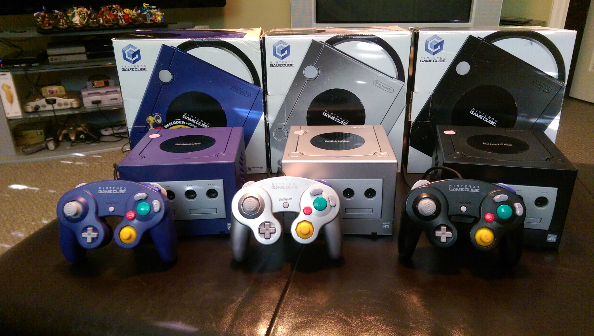
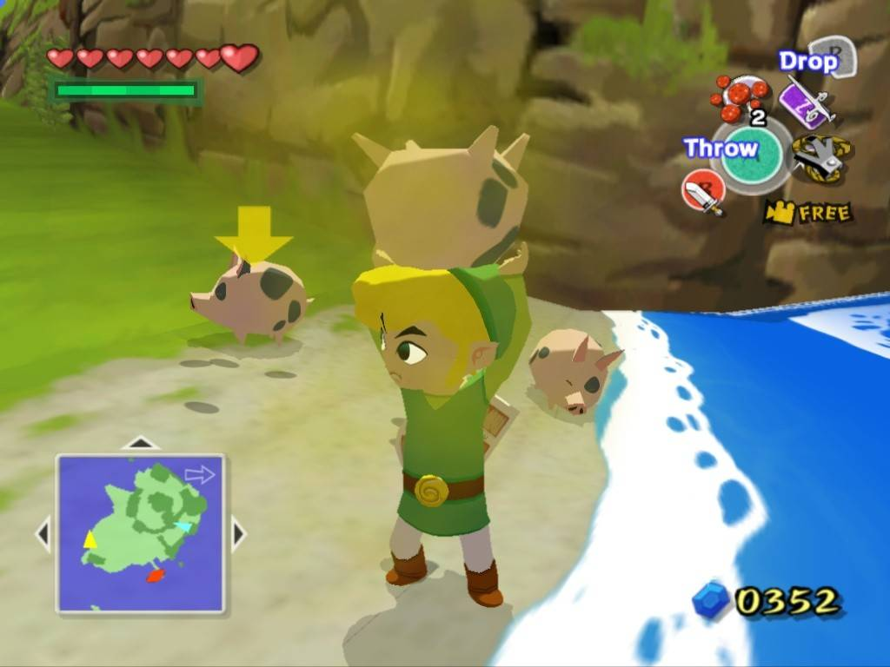
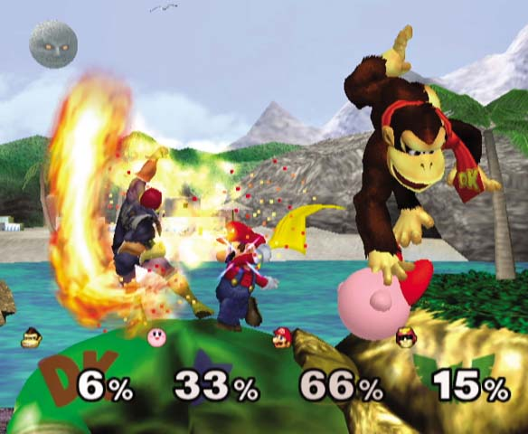

Nintendo GameCube es una de las consolas de sexta generación y fue fabricada por Nintendo. Es la sucesora de la Nintendo 64 y la predecesora de la Wii.
Sus principales características son su procesador central basado en un IBM PowerPC, y su procesador gráfico desarrollado por ATI Technologies. Nintendo, por primera vez, prescinde del cartucho como formato de almacenamiento, y adopta un formato óptico propio, el Nintendo Optical Disc. El nombre «GameCube» se debe a que el sistema tiene la forma parecida a la de un cubo. Es además la primera consola de Nintendo que no cuenta en su fecha de lanzamiento con un juego de Mario, mascota oficial de la casa.
La consola fue lanzada el 3 de mayo de 2002 en Europa. Fue descontinuada el 28 de octubre de 2007 en Japón y el 17 de mayo de 2008 en Europa.
Según cifras oficiales, GameCube logró vender 21 740 000 unidades mundialmente

Características
UNIDAD CENTRAL
Dispone de un procesador fabricado por IBM y un chipset gráfico de ATI, que le proporciona una gran potencia de cálculo. En cuanto a sonido, posee un DSP desarrollado por Macronix capaz de reproducir audio con calidad superior a la del CD.
MEMORIA
Unidad Microprocesador "Gekko", un procesador de la familia PowerPC, fabricado por IBM.
La frecuencia de reloj es de 485 MHz y la cpacidad de CPU: 1125 DMIPS. La Precisión de datos internos: 32 bits (enteros) y 64 bits (punto flotante de doble precisión).
El ancho de banda del bus externo* es un máximo de 1,6 GB/segundo y el bus de direcciones tiene un tamaño de 32 bits, mientras que el bus de datos es de 64 bits, a 162,5 MHz)
Tambien decir que al cambiar de cartuchos a CD Game Cube adquirió una mejora notoria de gráficos debido a que el CD tiene más memoria y permite tener más capacidad para cinemáticas...
*: Los buses de dirección vienen a ser un sistema digital que transfiere datos entre los componentes de una o varias computadoras.


ESPECIFICACIONES FÍSICAS
Las dimensiones de la unidad principal son 150 mm (ancho) x 110 mm (alto) x 161 mm (largo).
Las Entradas y Salidas que tiene son:
- 4 puertos para mandos de control.
- 2 ranuras Digicard para tarjetas de memoria.
- 1 salida analógica SNS A/V Multiout.
- 1 salida digital AV (solo en modelos fabricados antes del 22 de marzo de 2004).
- 2 puertos de serie de alta velocidad (modelos anteriores del 22 de marzo de 2004; los modelos actuales solo uno).
- 1 puerto paralelo de alta velocidad.
- Alimentación: adaptador de corriente DC 12 V x 3,5 A